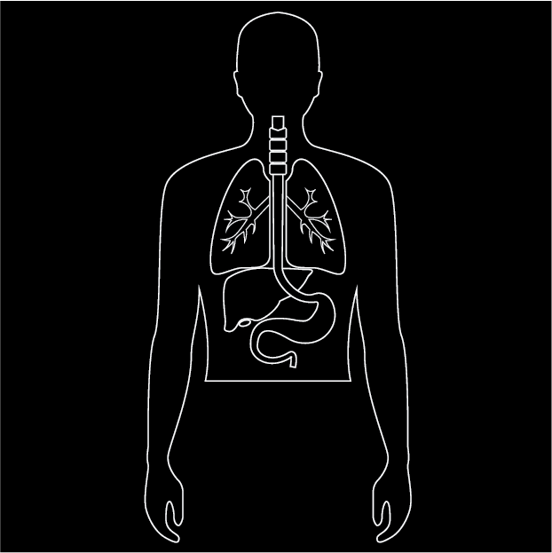

This digital pill's sensor, developed by Proteus Digital Health, is activated by acid in the stomach, and generates an electrical signal that is picked up by a patch worn on the ribcage; the patch in turn forwards information to a smartphone app.